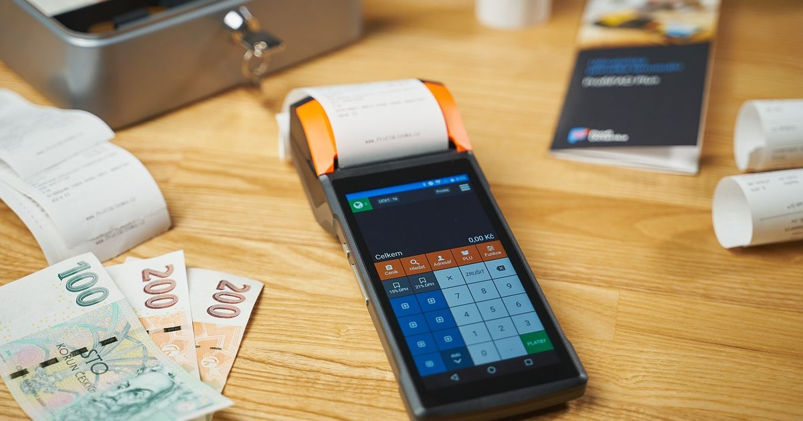

Best POS System for Small Retail Business – 2024 Guide

Key takeaways
- Identify core POS features that matter for small retail stores.
- Compare one‑time license vs. subscription models.
- Learn how offline licensing protects sales during internet outages.
- Get a quick checklist to evaluate any POS system.
- Why Small Retail Shops Need a Specialized POS
- Core Features Every Small Retail POS Should Have
- One‑Time License vs. Subscription: Which Is Better?
- Offline Mode and License Resilience
- Hardware Choices: From Touch‑Screen Terminals to PCs
- Data Backup Strategies That Retail Owners Trust
- Step‑by‑Step Setup Checklist
- Top 5 POS Solutions for Small Retail in 2024
Choosing the right POS system can make or break a small retail shop. The best POS for a small retail business balances affordability, simplicity, and essential features like inventory tracking and offline reliability.
In this guide we’ll walk you through the must‑have functions, pricing models, and real‑world considerations so you can pick a system that keeps your register ringing.
Why Small Retail Shops Need a Specialized POS
Why Small Retail Shops Need a Specialized POS
Small retail operations face a distinct set of challenges that generic point‑of‑sale solutions often overlook. With only one or two employees on the floor, every second spent on manual entry or troubleshooting directly cuts into sales time. Budgets are tight, so owners look for a system that delivers core functionality without a hefty subscription or hidden hardware fees. Fast checkout, real‑time inventory visibility, and reliable offline operation become non‑negotiable features.
Key pain points and why a tailored POS matters:
- Limited staff: Fewer cashiers mean the checkout process must be intuitive and quick. A touchscreen interface with barcode scanning and pre‑configured payment shortcuts reduces transaction time to under 30 seconds for most sales.
- Tight budgets: Small shops often allocate less than $1,500 annually for technology. A specialized POS offers a low‑cost license (often $30‑$70 per month) or a one‑time fee (≈$300‑$500) that includes essential features, avoiding the need to purchase separate inventory or accounting tools.
- Need for fast checkout: Long lines drive customers away. Real‑time price lookup, automatic tax calculation, and integrated receipt printing keep queues short.
- Inventory visibility: Stock levels must be visible at a glance. A dedicated retail POS provides instant alerts when an item drops below a reorder threshold, helping prevent out‑of‑stock situations without manual spreadsheet checks.
- Offline capability: Power outages or weak internet connections are common in many storefronts. A POS that caches sales locally and syncs when connectivity returns ensures the business never stops accepting payments.
Choosing a system built specifically for small retailers eliminates the need to cobble together disparate apps, reduces training time, and protects the bottom line. Look for solutions that combine a lightweight interface, affordable pricing, and robust offline mode to keep the shop running smoothly regardless of staff size or network reliability.
Core Features Every Small Retail POS Should Have
Core Features Every Small Retail POS Should Have
From building a full POS for shops across Saudi Arabia, the UAE and Pakistan I learned that a small retailer cannot afford a system that breaks when the internet drops or the license server hiccups. The features below are the minimum you should demand, and they all work offline, with a one‑time license that keeps the shop selling even if the connection is gone.
- Inventory Management – Real‑time stock counts, low‑stock alerts and batch/expiry tracking. I always include a simple add‑stock dialog that works on both a 7‑inch touch terminal and a large PC monitor.
- Barcode Scanning – Support for USB, Bluetooth and built‑in camera scanners. The scanner reads both Arabic and English barcodes, and the POS instantly updates the quantity without leaving the sales screen.
- Sales Reporting – End‑of‑day, weekly and monthly reports that can be exported to Excel or PDF. In my projects the reports show sales per item, per category and per cashier, helping owners spot best‑sellers without a separate analytics tool.
- Customer Database – Basic contact fields (name, phone, email) plus purchase history. The database is stored locally and backed up automatically (see backup options below), so a shop can still retrieve a customer’s last purchase even if the internet is down.
- Receipt Printing in English/Arabic – Dual‑language templates that comply with Saudi ZATCA Phase 2 e‑invoicing. The same template prints on any thermal printer, and the language switches based on the shop’s setting.
- Backup Options – Two simple, owner‑friendly methods:
- Export the SQLite/SQL Server Compact database to the shop’s Gmail account every night.
- Send a compressed backup file to a designated WhatsApp number; the owner can tap the file to restore later.
Typical pricing for a one‑time license that includes all the above ranges from $150‑$300 USD per terminal, depending on the hardware size. Subscription alternatives usually start at $20‑$40 per month but add the risk of service interruption if the payment fails. For a small retailer, the upfront cost pays off within a few months of increased efficiency.
Note: The POS runs on both tiny touch‑screen terminals and large PC monitors, supports Arabic/English receipts, and backs up to Gmail and WhatsApp – all with a single, fail‑safe license.
One‑Time License vs. Subscription: Which Is Better?
One‑Time License vs. Subscription: Which Is Better?
Based on experience building a full POS for shops in Saudi Arabia, the UAE and Pakistan, it was observed that a one‑time license with an offline fallback is a lifeline for owners who cannot guarantee internet connectivity. Below is a quick cost comparison over three years, followed by the pros and cons of each model.
| Model | Initial Cost (USD) | Yearly Maintenance | Total 3‑Year Cost |
|---|---|---|---|
| One‑time license | ≈$350 | $0–$50 (optional support) | ≈$350–$500 |
| Subscription (annual) | $0 | $120–$150 per year | ≈$360–$450 |
Pros of a one‑time license
- Predictable upfront cost – no surprise renewals.
- Works offline; the shop keeps selling even if the license server is down.
- Popular in the Middle East and Canada where cheap competitors push perpetual licenses.
- Simple budgeting for small owners who prefer a single payment.
Cons of a one‑time license
- Limited revenue for the vendor, which can reduce long‑term feature investment.
- Support may be optional or extra‑priced.
Pros of a subscription
- Includes regular updates, cloud backup integration and support.
- Lower upfront expense – easier for cash‑strapped startups.
Cons of a subscription
- Requires reliable internet for license validation and updates.
- Costs add up over time; a shop that never upgrades may end up paying more.
Why the regional split?
- Middle East (Saudi Arabia, UAE): Shop owners are accustomed to buying the software once and keeping it running offline. Cheap local vendors market perpetual licenses aggressively, and owners value the ability to print bilingual invoices (Arabic/English) without a constant connection.
- Canada: Many small retailers favor the same model because it avoids recurring fees and aligns with traditional desktop‑software purchasing habits.
- Pakistan: Both models coexist; some owners choose a monthly plan for added cloud features, while others still prefer a one‑time purchase.
In practice, I recommend a one‑time license for shops that need offline resilience and bilingual invoicing, and a subscription only if you rely heavily on cloud backups or want continuous feature upgrades.
Offline Mode and License Resilience
Offline Mode and License Resilience
Retail environments cannot afford downtime, especially when the internet connection is unreliable. A fail‑safe license ensures that the POS continues to operate even if the cloud validation server cannot be reached.
When the system first starts, it contacts the vendor’s licensing server and downloads a signed token that includes the expiration date, allowed device IDs, and a cryptographic checksum. This token is stored locally in an encrypted file. As long as the token is valid, the POS can run in offline mode without re‑checking the server.
- Initial activation: Connect to the internet, enter the license key, and let the POS verify it.
- Token caching: The POS saves the signed token on the device’s SSD or secure storage.
- Periodic re‑validation: Every 7‑14 days (configurable), the POS attempts to re‑validate the token. If the connection fails, it logs the attempt and continues operating.
- Grace period: Most vendors provide a 30‑day grace period after token expiry before the system locks out non‑essential features.
This approach matters for small shops because:
- Continuous sales: Cash registers keep ringing even when the Wi‑Fi drops, preventing lost transactions.
- Data integrity: Sales are stored locally and synced automatically once the connection returns, avoiding gaps in inventory or accounting.
- Cost control: No need for expensive redundant internet lines; a basic broadband plan suffices.
When choosing a POS, verify the following license‑resilience criteria:
| Feature | What to Look For |
|---|---|
| Offline transaction buffer | Stores at least 48 hours of sales data locally. |
| Signed license token | Uses RSA/ECDSA signatures to prevent tampering. |
| Grace period length | Minimum 14 days after token expiry. |
| Automatic sync | Pushes data to the cloud as soon as connectivity is restored. |
Typical pricing for a resilient license model ranges from $30‑$60 per month for subscription‑based POS, or a one‑time fee of $300‑$500 with an annual renewal for token updates. Small retailers should weigh the ongoing cost against the risk of lost sales during outages; a modest subscription often pays for itself within weeks of uninterrupted operation.
Hardware Choices: From Touch‑Screen Terminals to PCs
Hardware Choices: From Touch‑Screen Terminals to PCs
Choosing the right hardware is the first tangible decision when adopting a POS system. The device must handle the software smoothly, fit the shop’s layout, and stay within a modest budget. Below is a quick guide to the most common hardware families, their price brackets, and selection tips for tight counter space.
| Hardware Type | Typical Price (USD) | Space Requirements | Key Pros |
|---|---|---|---|
| All‑in‑One Touch‑Screen Terminal | $400‑$900 | Compact footprint (12‑15 in. width) | Intuitive UI, built‑in receipt printer options, durable glass |
| Tablet + Docking Station | $250‑$650 | Very small (tablet 8‑10 in.) | Portability, easy to replace, can double as a customer‑facing display |
| Standard Desktop PC + Monitor | $350‑$800 | Larger (monitor 17‑22 in.) | Higher processing power, flexible peripheral connections |
| Rugged Handheld Scanner | $150‑$300 | Handheld, no counter space | Ideal for inventory checks and line‑busting |
Tips for selecting hardware that fits limited counter space
- Measure first. Record the usable width and depth of the checkout area. Leave at least 2‑3 in. clearance for cables and airflow.
- Prioritize all‑in‑one units. They combine CPU, display, and often a built‑in receipt printer, eliminating the need for a separate tower.
- Consider mounting options. Wall‑mount brackets or under‑counter shelves can free up floor space for a tablet‑dock combo.
- Check peripheral compatibility. Ensure the chosen device supports the barcode scanner, cash drawer, and receipt printer you plan to use. USB‑C and Bluetooth are common standards.
- Plan for future growth. If you anticipate adding more registers, choose a model with easy scalability, such as a tablet that can be swapped out without re‑configuring the entire system.
For most small retailers, a 12‑inch all‑in‑one terminal or a tablet paired with a sturdy dock offers the best balance of cost, durability, and space efficiency. Pair the device with a compact receipt printer (≈$120‑$200) and a low‑profile cash drawer (≈$80‑$150) to complete a functional, space‑savvy checkout station.
Data Backup Strategies That Retail Owners Trust
Data Backup Strategies That Retail Owners Trust
Data loss can cripple a small shop overnight, yet many owners stick to familiar tools that are easy to manage. Below are three straightforward backup methods that require minimal technical setup and provide reliable protection for sales records, inventory lists, and customer data.
- Gmail (Google Drive) backup: Export POS reports as CSV or PDF and attach them to an email sent to a dedicated Gmail account. Enable Google Drive sync on a workstation so that the attachment is automatically stored in the cloud. This method costs only the nominal price of a Google Workspace plan (≈$6‑$12 per user per month) and offers 15 GB–2 TB of storage, depending on the tier.
- WhatsApp chat backup: For shops that already use WhatsApp Business to share daily sales snapshots with staff, enable the built‑in chat backup to Google Drive or iCloud. The backup runs nightly and preserves any media files (photos of receipts, inventory photos) alongside text logs. This is free beyond the existing cloud storage quota and requires no extra software.
- Local USB drive: Keep a USB flash drive (32 GB–128 GB) labeled “POS Backup” in a fire‑proof safe. Schedule a daily or weekly copy of the POS database folder using a simple script or the POS software’s export function. USB drives cost $5‑$20 and provide an offline copy that is immune to internet outages.
While these methods are simple, many POS platforms also offer integrated cloud dashboards. Such dashboards can be intimidating because they often bundle multiple services—real‑time analytics, remote device management, and automated backups—behind a single login. The complexity can lead to:
- Confusing navigation that makes it hard to locate the backup settings.
- Unexpected subscription fees (often $20‑$50 per month) for features that small shops may never use.
- Reliance on a single vendor; if the service experiences downtime, access to recent backups may be delayed.
For owners who prefer control, the three methods above provide a clear, low‑cost path to data safety. Combine them for redundancy: store a cloud copy via Gmail, a quick reference on WhatsApp, and an offline snapshot on a USB drive. Test the restore process quarterly to ensure backups are usable, and keep the backup routine documented in your standard operating procedures.
Step‑by‑Step Setup Checklist
Step‑by‑Step Setup Checklist
Getting a POS up and running quickly is crucial for a small retail shop. Follow this concise, numbered checklist to move from hardware unpacking to the first recorded sale, while ensuring licensing and backup are correctly configured.
- Unbox and verify hardware. Check that the touch‑screen terminal, receipt printer, barcode scanner, and cash drawer match the packing list. Typical hardware bundles cost between USD 200‑500 for a basic setup.
- Connect power and network. Plug each device into a reliable power source. Use a wired Ethernet connection when possible; if Wi‑Fi is required, ensure signal strength >‑70 dBm at the terminal.
- Install the POS software. Download the installer from the vendor’s official site or insert the provided USB key. Run the installer, accept the EULA, and choose the default installation path (e.g., C:\Program Files\POS).
- Enter license key. During the first‑run wizard, input the license key supplied with the purchase. Activate online; the process usually takes 30‑60 seconds. Record the key in a secure password manager.
- Configure store profile. Input store name, address, tax rates, and currency. Set up user accounts with appropriate roles (admin, cashier, manager).
- Set up payment processors. Link the terminal to the chosen gateway (e.g., Stripe, Square). Test a small transaction to confirm connectivity.
- Import product catalog. Upload a CSV file with SKU, description, price, and inventory count. Verify that barcodes scan correctly on the handheld scanner.
- Define receipt and tax settings. Choose receipt layout, enable digital receipts if needed, and confirm tax calculation matches local regulations.
- Configure backup strategy. Enable automatic daily backups to a cloud service (e.g., Google Drive, Dropbox) or to a local NAS. Set retention to at least 30 days. Test a manual backup and restore to ensure data integrity.
- Run a test sale. Process a dummy transaction: add an item, apply tax, accept payment, and print a receipt. Verify that inventory decrements and the sale appears in the sales report.
- Train staff. Conduct a 30‑minute walkthrough covering login, ringing up items, handling returns, and ending the cash drawer.
- Go live. Open the register for real customers. Monitor the first few hours for any error messages and confirm that backups run as scheduled.
Top 5 POS Solutions for Small Retail in 2024
Top 5 POS Solutions for Small Retail in 2024
Choosing the right point‑of‑sale platform is a balance between cost, flexibility, and how well the system works in the specific market you serve. Below is a concise comparison of five widely‑used solutions that meet the needs of small retailers in the United States, United Kingdom, Canada, and Australia.
| Solution | Price (USD) | Licensing | Offline Support | Best For |
|---|---|---|---|---|
| Square POS | Free plan; paid tiers $60‑$299 / month | Subscription (pay‑as‑you‑go) | Limited offline mode – sales queue until connection restored | US & Canada retailers needing quick setup and integrated payment processing. |
| Vend by Lightspeed | $99‑$199 / month per register | Subscription | Full offline mode; data syncs when back online | UK & Australia shops that require robust inventory features across multiple locations. |
| Shopify POS | $29‑$79 / month (plus Shopify plan) | Subscription | Offline sales stored locally; sync on reconnect | Retailers already using Shopify e‑commerce, especially in US and Canada. |
| Lightspeed Retail | $99‑$149 / month per register | Subscription | Offline mode with local transaction cache | Businesses with larger catalogs and need for advanced reporting in all four markets. |
| eHopper | Free up to 1,000 transactions; paid plans $25‑$99 / month | Subscription (tiered) | Offline capability on Android/iOS devices | Cost‑conscious shops in Australia and UK that want a simple, mobile‑first solution. |
Key take‑aways:
- For a zero‑upfront cost and built‑in payment processing, Square is the most accessible in North America.
- If offline reliability is critical—e.g., in areas with spotty internet—Vend, Lightspeed, and Shopify POS all provide robust local caching.
- Shopify POS adds value when you already run an online store on the same platform, reducing duplicate inventory work.
- eHopper offers the lowest price ceiling, making it attractive for very small shops or pop‑up locations.
- All five solutions support the major currencies and tax rules of the US, UK, Canada, and Australia, but double‑check regional tax configuration during setup.
When evaluating these options, match the licensing model to your cash‑flow preferences (subscription vs. one‑time fee), verify that the offline workflow aligns with your store’s internet reliability, and confirm that the vendor offers local support or documentation for your country.
Frequently asked questions
Can I run a POS on an old Windows 7 computer?
Yes, many POS vendors still support Windows 7, but you should verify offline licensing and security updates before deployment.
How does offline licensing keep my sales running?
The POS stores a local license token that validates for a set period. If the internet goes down, sales continue until the token expires or is explicitly blocked.
Do I need a separate backup service for my POS data?
A simple backup to Gmail or WhatsApp can be enough for small shops. Automate daily exports to avoid manual effort.
Is a one‑time license more expensive upfront than a subscription?
Upfront cost is higher, but over three‑to‑five years it often costs less than recurring fees, especially when you factor in subscription price hikes.
What barcode scanner works best with low‑cost POS systems?
A USB or Bluetooth laser scanner that supports standard UPC/EAN codes is sufficient; test compatibility with your chosen software before buying.
Need a POS system, website or app for your business?
I build affordable custom POS software, business websites and mobile apps for shops and restaurants worldwide.
Get a free quote